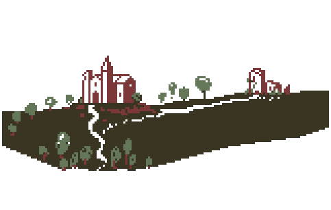

El Último Juramento es un juego diseñado para funcionar en un Amstrad CPC 6128. Está disponible en formato .dsk
Si no tienes un Amstrad CPC, puedes jugarlo en cualquier emulador de esta máquina.
Por ejemplo, el emulador Caprice.
Si prefieres un emulador on-line, puedes echar un ojo a Crocods. Debes descargar igualmente el archivo .dsk para abrirlo después desde la interfaz web del emulador.
Los comandos GRABAR y CARGAR te permitirán guardar tus avances en el juego (hay solo una posición de guardado).
Desde el emulador, utiliza snapshots si quieres generar diferentes guardados.
El Último Juramento es un juego del tipo PARSER, lo que significa que debes teclear comandos para realizar acciones.
Los comandos pueden ser :En los ejemplos anteriores, las palabras de enlace pueden introducirse o no.
Los comandos pueden teclearse en MAYÚSCULAS o MINÚSCULAS indiferentemente, pero SIN ACENTOS. Esto evita problemas con las diferentes versiones de teclado del Amstrad.
Ciertas fases del juego ofrecen opciones en lugar de comandos. Son reconocibles por el hecho de que en la pantalla se muestra una lista de posibilidades.
En esas fases, utiliza las flechas ARRIBA y ABAJO para seleccionar tu elección, entonces pulsa ENTER
Brújula : Está ahí para que no pierdas la orientación.
Reloj de arena : Indica el número de turnos transcurridos desde el inicio de tu aventura.
Retrato : Te informa de tu estado.
Descripción : Zona de texto que describe las ubicaciones, los objetos y los resultados de tus acciones.
Opciones : Lista de las opciones posibles en el modo OPCIONES
Comando : En la parte inferior de la pantalla, una línea está reservada para introducir los comandos. Cuando el juego está en modo PARSER, el carácter '>' aparece al principio de la línea.
La pálida luz de la bola de cristal ilumina el rostro de la anciana de ojos vacíos. El oráculo de tu aldea te ha convocado y esperas con ansia lo que tiene que contarte.
— No nos queda mucho tiempo...
— He explorado los meandros del porvenir... sólo vos aún tenéis oportunidad de levantar la maldición que azota nuestra aldea.
— Partid sin demora... hacia el norte... en medio del bosque... La capilla... Hermès...
Un largo instante transcurre mientras el oráculo permanece postrado. Reconoces esas señales. Todas las personas afectadas por la maldición pierden progresivamente el libre albedrío.
Al principio actúan mecánicamente, luego, gradualmente, van perdiendo la capacidad de hablar y terminan incapaces de realizar la más mínima acción... para después, dejarse morir.
Ésta es la transcripción del grimorio de Hermès.
Recuerda apagar el fuego, si no, la poción recuperará sus propiedades iniciales tan pronto como pase a blanco.
Esta receta es la transposición de la poción de luz
🛈Si todo ha ido bien, el líquido debería volverse de color verde.
Esta preparación es indistinguible de su transpuesta
NUNCA TRANSPONGAS ESTA RECETA
Algunos comandos tienen abreviaturas.
|
|
Siempre estarás mirando al NORTE.
La mayoría de las veces, no será necesario citar el caldero cada vez.
Por ejemplo : PONER el QUESO en el CALDERO se puede escribir también PONER el QUESO.
Lo mismo para mezclar. No es necesario teclear MEZCLAR la PÓCIMA con la CUCHARA. Un simple comando MEZCLAR basta, siempre y cuando tengas un elemento en tu inventario adecuado para esa función.
Vigila atentamente el color de la mezcla. Proporciona una indicación de la temperatura y estado.
|
El Último Juramento ha sido creado |
Guía del firmware de Amstrad CPC
Paleta de colores utilizada para este manual : Aurel L.
Fuentes utilizadas para los títulos del manual : Kingthings Foundation